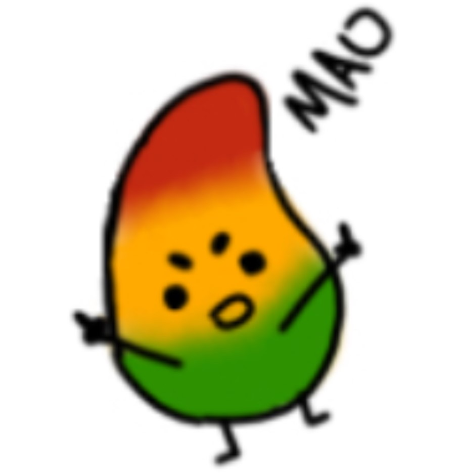
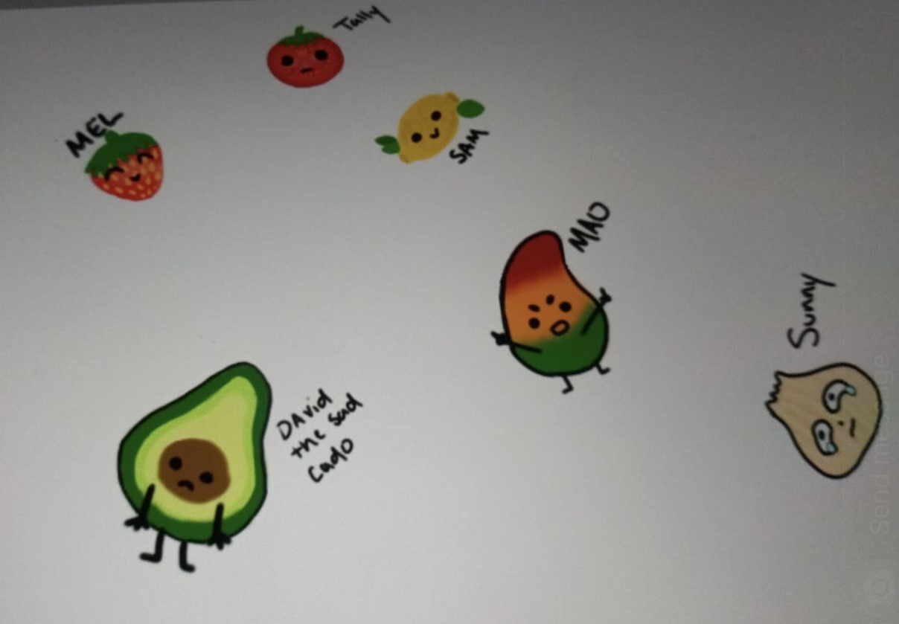
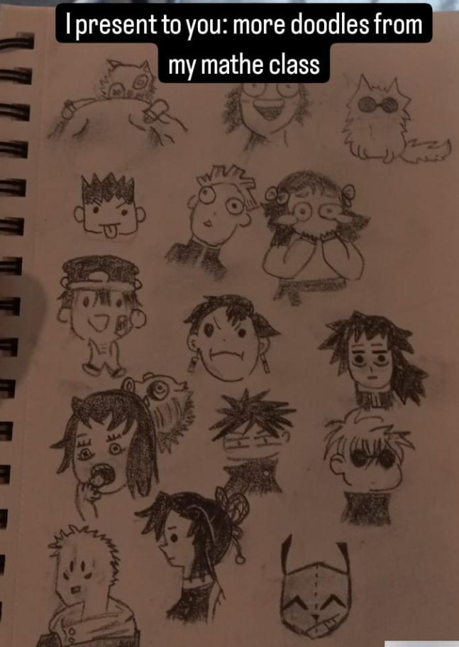

Just cause art
When it comes to just cause art I stick to two things. I am either drawing something that I liked from my childhood or I saw came up with a concept that I wanted to put my own spin own. I usually stick to the low quality drawings so I am not stressing over the little details. I also am more comfortable working on paper instead of digital, after reciving my Ipad last year I am slowly transitioning to doing some of my art digitally.

I have named this ghost Gary, I was bored and it was my first semester here. I didn't have any real friends to hang out with during October, so I was stuck in my dorm, I was on social media watching people do the ghost trend, I did not have an extra sheet to cut so I just drew a little ghost friend. He has now become one of the main things that I draw when doodling.
 Mao, The little angry mango that dawns the footer of my portfilo is a character that I had made up for my boyfriend. The day I had made Mao I remember that I was hungry and on the phone with my boyfriend. We both eat mangos, and I was already drawing other food characters. I can't for the life of me remember what was said but I came up with the idea to draw him as a character. My boyfriend has a bold personality so I gave Mao one, but it's kinda hard to give a mango a personality, so I made him do something that could be seen offensive when there is no context. As previsously mentioned, I spoke of drawing other characters which can be spotted next to Mao. I did not get as attatched to them like how I did for Mao because he holds more significance. I struggle to focus when something does not entice my attention, I was in math last semester when I doodled Tally, she's a tomato. I just started drawing characters from food. Some of their name hint at what they are, make fun of their personality, or describe how the food taste, Except for David, he is just David the avocado, do not ask.
As I explain eariler this is just cause art, so like the caption states it was the results of me passing time. Of course I should be paying attention in class, but that has always been a challenge regardless of what I try. Not all the sketches on that page where during the class, as 8/15 where from me riding the bus home for fall break since I can only listen to music cause I get motion sickness when reading and on an empty stomach. Majority of the drawings are anime related and there is an obvious theme of them being Demon Slayer, and my reasoning is because the manga is known for have interesting manga panels, which also bring me a bit of joy when looking at them and are always certain to get a giggle from me. I am extremly happy when I look at these in my sketchbook and do not think that they are taking up space. I will also be taking the bus again in just shy from a week, so naturally these low quality drawings will soon double in size.


{kind=link}
{kind=link}
{kind=link}
{kind=link}